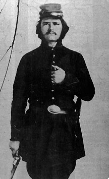

|

NAME: Oscar Augustus Durrum
BORN: ?
DIED: 1864
ALLEGIANCE: Confederate
HIGHEST RANK: Lieutenant
UNIT: 3rd Texas Cavalry; 1st Texas Partisan Rangers
RECORD: Enlisted at Jefferson, Texas, in
June 1861. Mortally wounded at Mansfield, Louisiana, on
April 9, 1864.
|
|
Lieutenant Oscar Augustus Durrum lay in a field hospital at
Mansfield, Louisiana, thinking of what to write to his
father. The April 9, 1864, Battle of Mansfield had been a
decisive Confederate victory but Durrum was one of the many
Southern soldiers who paid the price of that victory. In
fighting the day after the battle, Durrum's left leg was
shattered above the kneecap; dried blood and matted cloth
could not hide the wound's severity. Clearly, the leg would
have to come off.
Still, Durrum remained hopeful. He felt that if his father,
Dr. J. C. Durrum, could reach him and take him home to
Smithville, Texas, he could recover.
Nearly three years had passed since June 1861, when "Gus,"
as Durrum's friends called him, had joined the 3rd Texas
Cavalry. Now, he and three younger brothers were serving
with the 1st Texas Partisan Rangers. A fourth brother had
died the previous fall in the Battle of Chickamauga,
Georgia.
As Durrum lay in pain, he dashed off a letter to his father.
"I am lying at the above named place [College Hospital] with
my left leg pierced through about two inches above the knee,
and I am inclined to think the bone is much shattered," he
wrote. "If you can procure a hack, please come after me."
Before Dr. Durrum could arrive, his son's ruined leg was
amputated. The young lieutenant died two days later and was
buried in an unmarked grave. "He was my particular friend
and acquaintance," Private Harvey C. Medford of the 1st
Texas Partisan Rangers recalled sadly. "It is a pity that
such a noble young man should be cut down in the bloom of
his youth."
Source: Civil War Times Illustrated
39:6 (December 2000), 112.
|